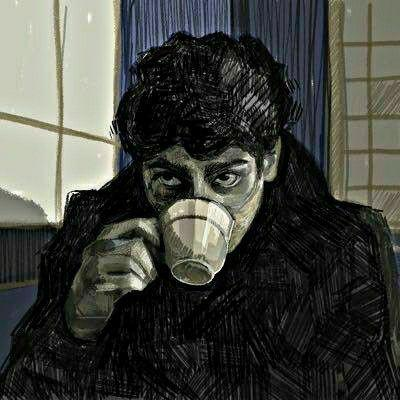

AN OLDER EXPERIMENT
Narrative
An ambitious interactive project that didn't work out. I'm keeping it here anyway.
I build and break stuff for fun. Some ideas turn into tools, some into long notes, and a few stay experiments. I'm from Mumbai, and this is where I keep them all.

FROM MUMBAI · ELECTRONICS ENGINEERING · OPS
I have a bachelor's degree in Electronics Engineering and work in an operations role. I like seeing what happens to a system after the diagram is done: how it runs, where it fails, and what it gives away.
That curiosity takes me into web security, recon, and OSINT. WebDorks and CLIx started as ways to make repeated tasks easier. I write when a topic needs more room than a README.
Some of these started because I needed them. Some were just fun to try.
I built this to keep useful search queries in one place. It fills in target details, filters the collection, and gets me to the query faster.
I wanted one place to search commands and examples. CLIx is the reference I ended up building.
A Go tool that brings several recon steps into one workflow.

I rebuilt Tweecord as a bot for RSS, GitHub releases, Bluesky, and X with your own API access. Slash commands manage sources and channels; the local dashboard handles API settings and delivery history.

I built Gitium to find repos through people I follow. You can import stars, explore commit graphs, compare account scores, find issues to contribute to, and chat in private rooms.
An ambitious interactive project that didn't work out. I'm keeping it here anyway.
I use these posts to work through a topic properly, with the details I wanted when I started reading about it.
Loading posts…
Check your IP, look up a DNS record, or hash a string here.
See the public address and network details this connection shows to the outside world.
Ask Google Public DNS for A, AAAA, MX, CNAME, or TXT records.
Get a SHA-256 digest in your browser. The text you enter stays on your device.